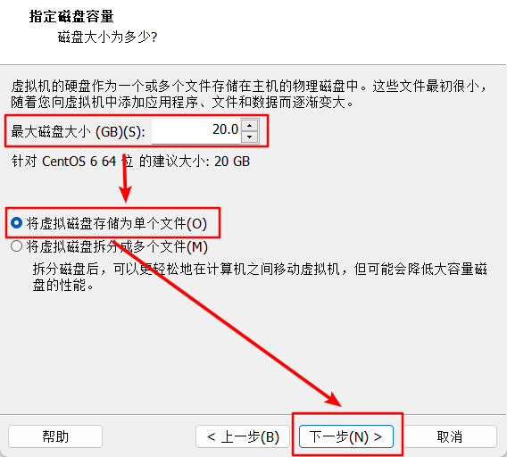
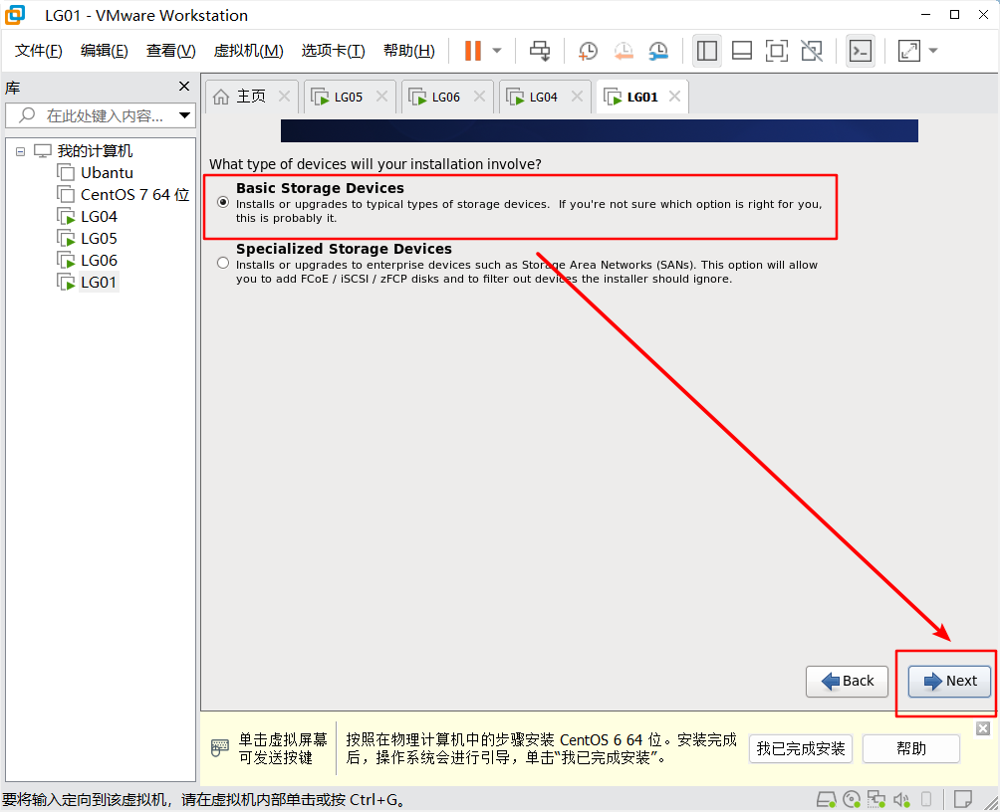

虚拟机的安装
2025-09-25
虚拟机的安装
点击创建新的虚拟机

选中典型并点击下一步

选择稍后安装操作系统，再点击下一步

选择Linux，版本选择CentOS 6 64位，再点击下一步
版本选择对应光驱版本
输入虚拟机名称、位置，再点击下一步
选择磁盘大小，将虚拟磁盘存储为单个文件，最后点击下一步

点击完成

点击编辑虚拟机设置
虚拟机内存设置为2048

在CD设置中选择使用ISO映像文件，选择ISO文件路径

可以选择将打印机移除

配置完成后点击确定

开启LG01虚拟机

选择第一个，并按回车

通过按左右键将光标移动到Skip，并按回车跳过检测

点击Next
选择英语，再点击Next
继续点击Next
选择基础的安装，点击下一步

选择Yes，忽略所有数据

虚拟机主机名和虚拟机名保持一致，为LG01，点击Configure Network，选中System eth0，点击Edit。
返回真实主机，进入网络连接，选中VMware Network Adapter VMnet8，并点击鼠标右键中的属性
选中ipv4，点击属性，并输入以下配置

勾选Connect automatically，点击IPv4 Settings，配置好网络地址、子网掩码、网关、DNS，最后点击apply

点击Close，再点击Next
选择上海时区，再点击Next
这里输入root密码，点击下一步
选择Use Anyway

选择Create Custom Layout，点击Next
点击Create

依次创建/boot、交换空间swap、根目录
点击Next、Format

点击write changes to disk
接下来的步骤一直点Next，等待安装

点击Reboot重启
欢迎界面点击Forward
同意条约，点击Forward
不创建普通用户，直接点击Forward，Yes
选择与互联网同步时间，点击Forward
将kdump选项去掉，直接点击Finish

在VMware中配置虚拟网络编辑器